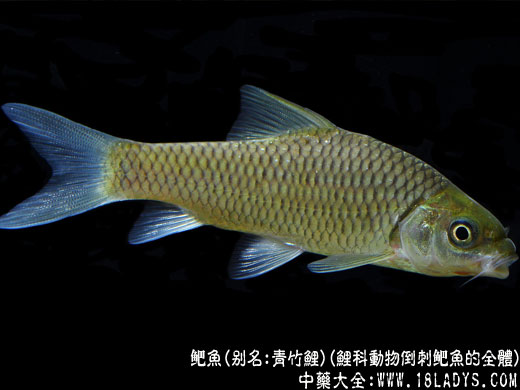

鲃鱼，鲃，读音同“巴”，为鲤科动物倒刺鲃鱼的全体；生活于江河上游，栖于乱石间隙和深入石洞处；云南的元江流域、西江上游及海南岛；中药名。
别名：竹鲃、青竹、青竹鲤。
为鲤科动物锯倒刺鲃的肉。锯倒刺鲃，体长而侧扁，背部稍隆起，全体几成长菱形，体长一般在40厘米左右。头小，稍尖，头的背部成弧形。吻钝，稍向前突出。口端位，成马蹄形；唇厚，上、下唇在口角处相联，唇后沟不相联，上颌突出。须2对，前对比后对稍短。背部微黑色，腹部白色，多数个体的鳞片前缘呈黑色，近尾鳍基部有一黑斑，幼鱼更为明显，有时腹鳍和臀鳍末端稍带黑色。生活于江河的上游，栖息于乱石间隙和深水石洞处。食物主要为腐败的植物碎片和丝状藻类。产卵期约在4月间。
气味：味甘，性热，有小毒。
功效与作用：鲃鱼于可入药(见《食物本草》)。味甘，性热。功能壮阳，温中，补衰。主治肾阳不足，腰膝酸软，胃寒腹痛，形体虚弱等。该鱼肉质肥美，富含油脂，具有较高的营养价值。
处方举例：鲃鱼芪水煎：鲃鱼1条，鱼鳔10克，黄芪15克。鲃鱼去鳞、内脏、洗净，与鱼鳔、黄芪一起煮熟，调味。食肉饮汤。功能温肾缩尿。适用于遗尿，小便失禁，尿频等症。见《中国药膳学》。
附：鲃鱼是淡水鱼种，不是鲅鱼，鲅鱼即马鲛，马鲛是海鱼，两者读音相近，注意区分。